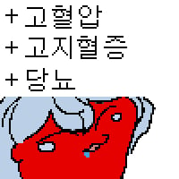

장송의 프리렌 노말 버전과 마미 버전
댓글
Cex
화석이잖아
마미가 아니라 포포 버전이네
Tag : standing fuck
저랬으면 사제 안떠났음
빵
존나 싸..쌜듯
장유의 프리렌


하늘이 반도 채 안보일듯
힘멜은 복상사 한건가

이랬으면 힘멜의 죽음은 수십 년 빨라졌겠지.
하루종일 프리렌 몸을 상상하며 딸만 쳤을 테니까.
어흐어흐어흐
이러면 자인이 바로 합류하자나
고릴라 쉑은 알아서 잘먹고 잘살겠지ㅋㅋ 하고 바로 개같이 유기할듯
하늘이 안 보여

단단히 썩었네